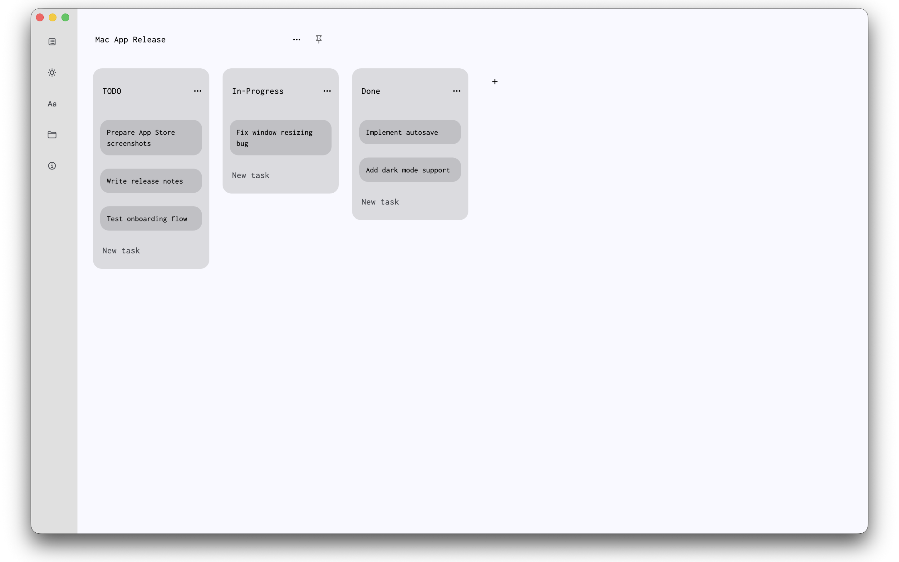
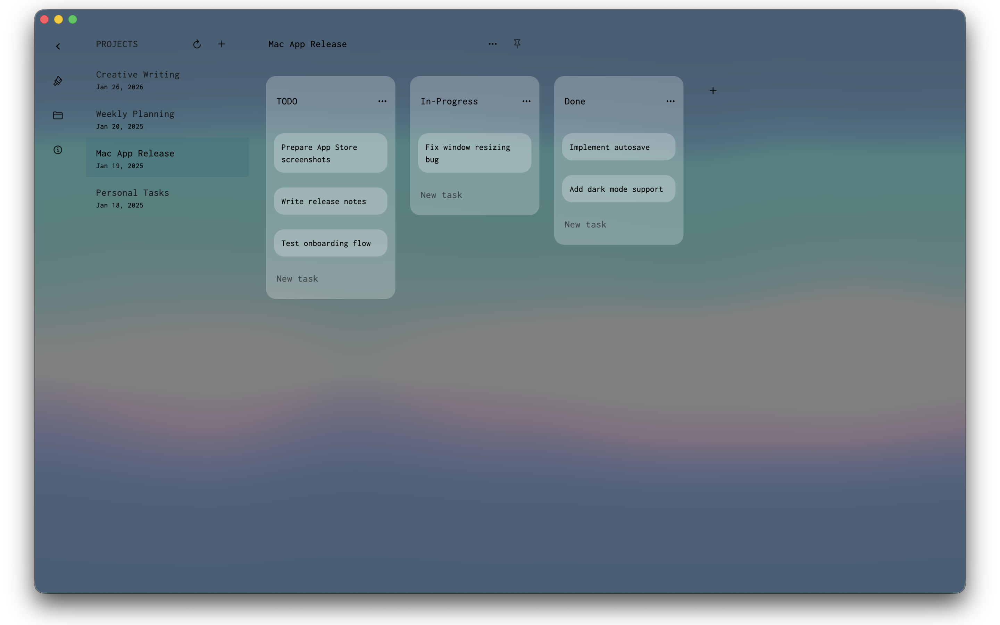
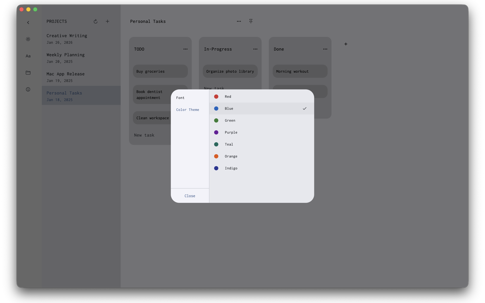

Kanbanero
A minimal, private kanban board for macOS.
Your boards are plain JSON files on your disk.
$8.99 · one-time purchase
macOS 12+ · Universal (Apple Silicon & Intel)
A minimal, private kanban board for macOS.
Your boards are plain JSON files on your disk.
$8.99 · one-time purchase
macOS 12+ · Universal (Apple Silicon & Intel)
No accounts. No cloud. No tracking. Your boards never leave your machine unless you choose to sync them.
Every board is a readable JSON file in a folder you pick. Back it up, diff it, script it, stash it in Git.
Minimal UI. Smooth drag and drop. Light and dark themes. No notifications, no nagging, no upsells.
Native macOS app. Opens instantly. Works offline. Keyboard shortcuts for everything common.
Store boards in your project repo. Diff them on PRs. Edit them in your editor if you want. It's just JSON.
Save any board as a template. Spin up new projects in seconds. Switch between boards with ⌘ L.




$8.99 · one-time purchase